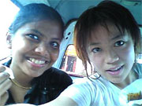
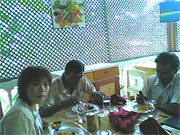
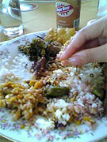

 スリーウィラーの中でパチリ☆ |
 低開発村視察時にレストランでランチ |
「むこうの人達に本当に良くしていただきました。勉強をする環境もしっかり整っていて全く英語とは無縁だったあたしにはきびしくも楽しい時間でした。英語の先生は時間もきちんと守ってくださり、親身に取り組んでいただきました。
スリランカでのホームステイは良い経験でした。食事もすごくおいしくステイ先では、いろいろな種類のスリランカ料理を調理してもらいました。家庭の暖かさも十分感じることが出来、短い期間にこんなに中身の詰まった体験が出来嬉しく思っています。
ホストファミリーとの生活は、皆さんとても優しく普段からいっぱい話しかけてくれました。みんな私に少しでもわかるようにと優しく何度も繰り返し、会話をしてくれました。街に連れて行ってくれたり、海で泳いだりという生活をしながら、まるで元々現地で暮らしているかのように思いました。
日本人がいないというのは、英語の勉強をするうえで重要なことでした。街に出るといつも誰かに声をかけられて、少しうるさく思いましたが、思っていた以上に治安は良く、悪質な人はほとんど見かけませんでした。通りすがりの女性や子供はこちらが微笑むと微笑み返してくれたり、手を振ってくれたりと人々の気持ちの暖かさを感じました。
持って行ったもので良かったものは、電子手帳です。これは必須でした。家族と食事をしながら英語の出来ない私にとって、手放せないものでした。 あとカメラ付携帯電話では毎日の小さな日常をいっぱい撮ることができました。また、国際ローミング携帯電話でいつでも簡単に連絡できたので、 持って行って良かったです。
私のわがままで急な申込みだったにもかかわらず、俊敏に対応していただき、感謝しています。私が大阪にいたため、Beインターナショナルの会社に直接いけないということはやはり不安でした。ネット上ではどの会社も良いことばかり記載してあるのですが、逢坂さんの親身な対応に大分助けてもらいました。土日をはさんだ連絡にもすぐに答えていただき、ありがとうございました。
Mr.Shanthaはとても口調の優しい方で最後までしっかりと面倒見ていただきました。最終日近くに、キャンディに行くことになり、自分１人で行動したいと言った私に一緒に電車でキャンディまで送り迎えしてくれて、私の泊まっていたホテルにも無事にいるかどうか電話してくれたりと現地スタッフがいるととても心強く安心して観光を楽しめました。スリランカにはもちろんまた行ってみたいです。ありがとうございました。」
 初めて手でカレーを食べた！ |
かわいい子供をパチリ☆ |